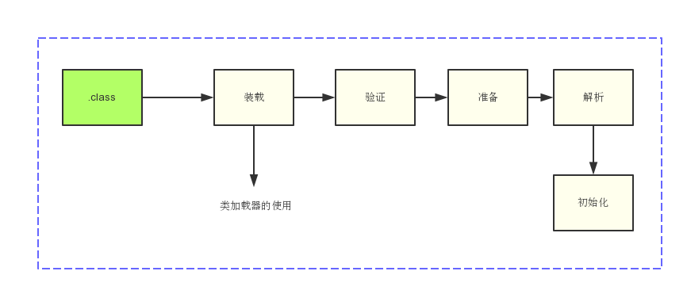
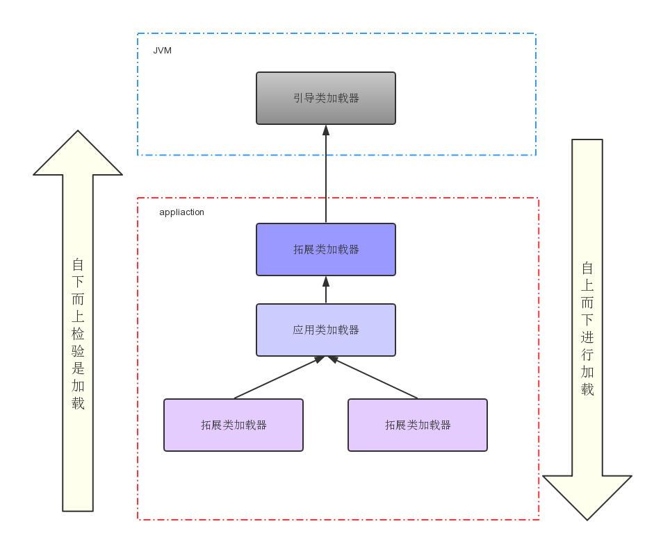

Java的设计初衷是主要面向嵌入式领域，对于自定义的一些类，考虑使用依需求加载原则，即在程序使用到时才加载类，节省内存消耗，这时即可通过类加载器来动态加载。
类加载器在实际使用中给我们带来的好处是，它可以使Java类动态地加载到JVM并运行，即可在程序运行时再加载类，提供了很活的动态加载方式。
学习:
ClassLoad是Java的核心组件,class都是由ClassLoad加载，把.class二进制文件读入到虚拟机，然后虚拟机进行连接和初始化的操作。

可以看到类的加载是在装载的时候进行的,装载之后的流程占时不做讲解
提示: 在我理解双亲的意思是父类的意思(委派给父类处理),因为通过源码可以了解到实际是把加载请求给父类先处理
类加载器种类:

再结合源码来共同看一下:
public abstract class ClassLoader { ...... protected Class<?> loadClass(String name, boolean resolve) throws ClassNotFoundException { //获取加载该类的锁 synchronized (getClassLoadingLock(name)) { // 校验是否早已加载过 Class<?> c = findLoadedClass(name); if (c == null) { long t0 = System.nanoTime(); try { if (parent != null) { //父类加载器 c = parent.loadClass(name, false); } else { //调用Bootstrap类加载器 c = findBootstrapClassOrNull(name); } } catch (ClassNotFoundException e) { // ClassNotFoundException thrown if class not found // from the non-null parent class loader } //父类加载器未加载 if (c == null) { // If still not found, then invoke findClass in order // to find the class. long t1 = System.nanoTime(); //当前类加载器进行加载 c = findClass(name); // this is the defining class loader; record the stats sun.misc.PerfCounter.getParentDelegationTime().addTime(t1 - t0); sun.misc.PerfCounter.getFindClassTime().addElapsedTimeFrom(t1); sun.misc.PerfCounter.getFindClasses().increment(); } } if (resolve) { //解析类 resolveClass(c); } return c; } } ....... }
双亲委派的好处
双亲委派的存在的问题
上下文类加载器(Thread.getContextClassLoader):
该类加载器,可以从该线程中获取应用类加载器来加载SPI的实现类。
当核心类库需要加载spi的实现类,它不能使用加载该核心类的加载器去加载用户的类加载器,所以需要从当前线程中去获取对应的应用类加载器
结合源码再来看下:
public final class ServiceLoader<S> implements Iterable<S> { //SPI的类加载方法 public static <S> ServiceLoader<S> load(Class<S> service) { //获取上下文类加载器 ClassLoader cl = Thread.currentThread().getContextClassLoader(); return ServiceLoader.load(service, cl); } public static <S> ServiceLoader<S> load(Class<S> service,ClassLoader loader) { return new ServiceLoader<>(service, loader); } private ServiceLoader(Class<S> svc, ClassLoader cl) { service = Objects.requireNonNull(svc, "Service interface cannot be null"); //获取的是系统类加载器 来进行应用类的加载 loader = (cl == null) ? ClassLoader.getSystemClassLoader() : cl; acc = (System.getSecurityManager() != null) ? AccessController.getContext() : null; reload(); } }
猜想: 至于为什么要从线程中获取默认的系统类加载器,而不是直接调用getSystemClassLoader()去加载，可能是因为不同的类加载器加载的同一个class,(JVM认为)他们是不同的对象
实现ClassLoad类:
public class CustomClassLoad extends ClassLoader{ @Override protected Class<?> loadClass(String name, boolean resolve) throws ClassNotFoundException { synchronized (super.getClassLoadingLock(name)) { long t0 = System.nanoTime(); Class<?> c = findLoadedClass(name); long t1 = System.nanoTime(); c = findClass(name); // this is the defining class loader; record the stats sun.misc.PerfCounter.getParentDelegationTime().addTime(t1 - t0); sun.misc.PerfCounter.getFindClassTime().addElapsedTimeFrom(t1); sun.misc.PerfCounter.getFindClasses().increment(); if (resolve) { resolveClass(c); } return c; } } }
该类是一个简单实现主要是如果只使用当前ClassLoad进行加载,占时一个简单易理解的实现,后续可能会更新tomcat的ClassLoad实现
后续更新